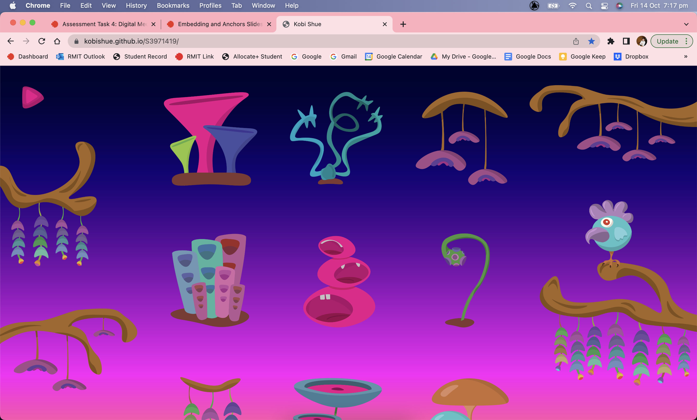

Program: Premiere Pro
This first project really taught me to really think outside the box, especially when our editing tools were so limited. The only tools that we could use was Fade to black/white, cut, crossfade/dissolve, adjustment of audio levels/equalisation and fade audio in/out.
As someone who specializes in audio, I mainly used dialogue and the heavy use of sfx to really drive the story with the help of the fast-paced editing of the chopped up moving image. The use of heavy panning of the audio to create a 3d stereo image to fully immerse the audience into the story and creating intense chorus effects on the audio by doubling the audio and slightly un-syncing the wave forms from each other to create a separation and to get rid of any audio phasing issues.
The worst part of this project was editing the audio in Premiere Pro. Usually i would use Pro Tools for audio editing. The audio work flow in premier was a long and tedious experience, but it forced me to really shape and design sound just by using basic EQ's, panning, cutting and doubling audio.
Programs: Visual studio Code, Pro Tools, Adobe Illustrator
We had to create and design a basic html website that had interactive icons that played audio. Our website had to be based off a theme that we had to choose from a selected list. This was a fun and exciting project because I could really focus on the sound design. The theme I chose was 'Future'. I decided to create futuristic instrument plants for my icons. With this idea, I could create some interesting sounds and create a colourful and bright colour pallet.
The icons were created on illustrator and mainly used the ‘curve pen’ tool to create nice curvy organic shapes for the instrument plants. One problem I had was trying to create all the plants in the similar size due to the ‘table-cell’ margins within the html code so it could look consistent and balanced on the webpage.
The sound design was the biggest factor in this project because that what makes this project so interactive. All the sounds were created and recorded on Pro Tools. The main objective of the project was to allow the user to play any of the ‘futuristic plants’ with the soundtrack that is played and would still sound in tune and in time with the soundtrack. So even a non-musical person could still play it and still sound good. How I did that is using all the instrument plants play notes from the Major Pentatonic Scale which creates beautiful harmonies with the soundtrack.
Programs: Unity, Maya, Reaper, Visual Studio Code
This project is a 3D environment that was based off happy memories of my love for congee (Asian rice soup). This was quite the challenge in trying to create a whole 3D environment in 3 weeks to both learn how to use unity and to code C#. Most of the 3D assets were from free 3d model websites that are on the internet. I also would create my own 3D assets within Maya.
The biggest struggle was designing the 3D environment. It was just so time consuming fine tuning the environments. After I created the environment, I found a first-person controller asset off the unity store for free. After creating the two scenes, I had to research and learn how to connect the two scenes with C# code and how to add colliders etc.
With the sound design, I wanted to create a dreamy and airy aesthetic to contribute to the memory theme. After finding some sounds I wanted to use, I used the ‘Valhalla Super Massive Reverb’ plugin and reversed the reverb on it to create the dreamy aesthetic that I wanted. For the second scene I created multiple layers to create a nice peaceful modern Asian family-owned restaurant atmosphere to contrast to the really reverberated sounds of the first scene and to really contrast from dream to present.